BY GENRE
エスニック・各国料理34店
WHY GO
わざわざ行く価値がある店3軒
-
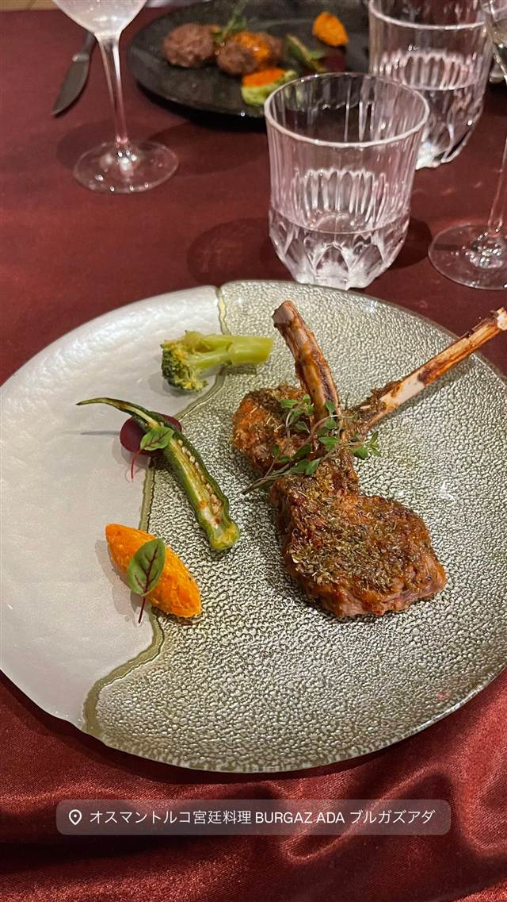
エスニック・各国料理 麻布十番 ブルガズ アダ（BURGAZ ADA） 日本で数少ないオスマン宮廷料理専門店で、香辛料をトルコから直接買い付ける 昼 ¥15,000～¥19,999 夜 ¥15,000～¥19,999 -
 メキシコ 北参道
FONDA DE LA MADRUGADA（フォンダ・デ・ラ・マドゥルガーダ）
内装をメキシコから輸入し、夕方以降はマリアッチが店内を回り生演奏する
昼 ¥3,000～¥3,999 夜 ¥6,000～¥7,999
メキシコ 北参道
FONDA DE LA MADRUGADA（フォンダ・デ・ラ・マドゥルガーダ）
内装をメキシコから輸入し、夕方以降はマリアッチが店内を回り生演奏する
昼 ¥3,000～¥3,999 夜 ¥6,000～¥7,999
-
 ハワイ Kahuku
Giovanni's Original Shrimp Truck (Kahuku店)
カフクスタイルのガーリックシュリンプを広めた元祖の屋台
ハワイ Kahuku
Giovanni's Original Shrimp Truck (Kahuku店)
カフクスタイルのガーリックシュリンプを広めた元祖の屋台
メキシコ
-
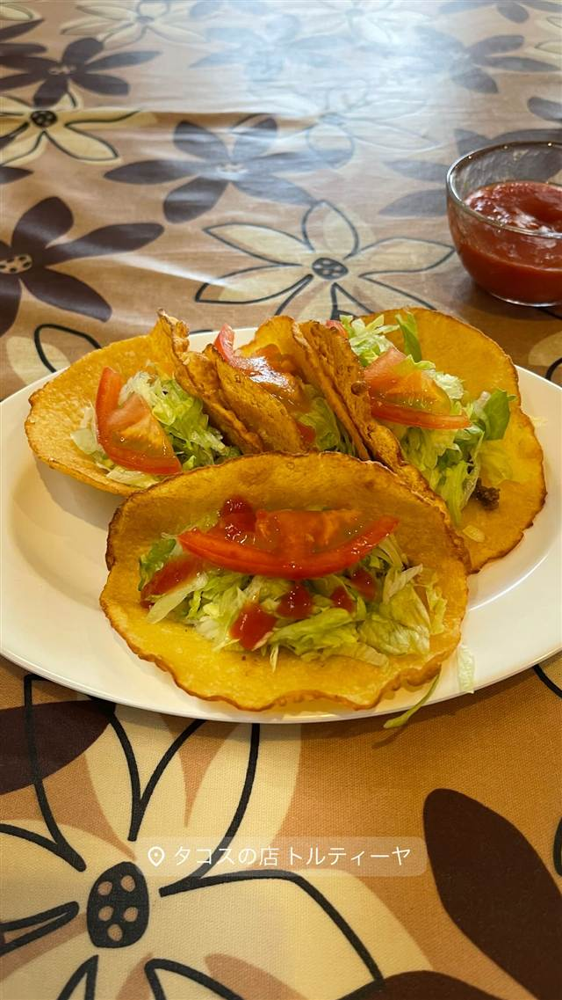
メキシコ 浦添 タコスの店 トルティーヤ 老舗で30年修行した店主が営む手作りタコスとタコライス 昼 ～¥999 夜 ～¥999 -
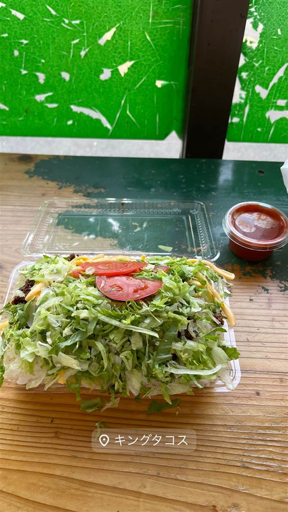
メキシコ てだこ浦西駅 キングタコス 長田店 野菜が苦手な米兵向けに考案されたタコライス発祥の系譜 昼 ～¥999 夜 ～¥999 -
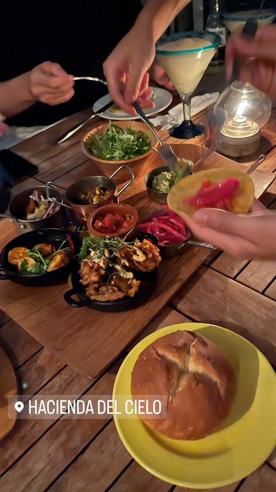
メキシコ 代官山駅 Hacienda del cielo MODERN MEXICANO 天井高8mの吹き抜けとテラスから東京タワーを望むモダンメキシカン 昼 ¥1,000～¥1,999 夜 ¥4,000～¥4,999 -
メキシコ 北参道
FONDA DE LA MADRUGADA（フォンダ・デ・ラ・マドゥルガーダ）
内装をメキシコから輸入し、夕方以降はマリアッチが店内を回り生演奏する
昼 ¥3,000～¥3,999 夜 ¥6,000～¥7,999
-
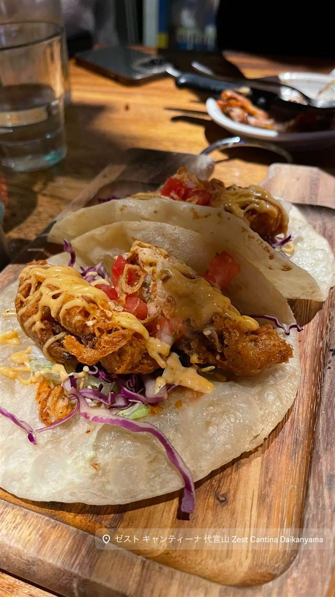
メキシコ 代官山 ZEST CANTINA 代官山 恵比寿の大型店が10年越しに代官山で復活したテックスメックス 昼 ¥1,000～¥1,999 夜 ¥3,000～¥3,999 - 写真なし メキシコ 麻布十番 FRIJOLES 麻布十番店 豆・米・肉・サルサを自分好みに選べるブリトー専門店の1号店 昼 ¥1,000～¥1,999 夜 ¥2,000～¥2,999
-
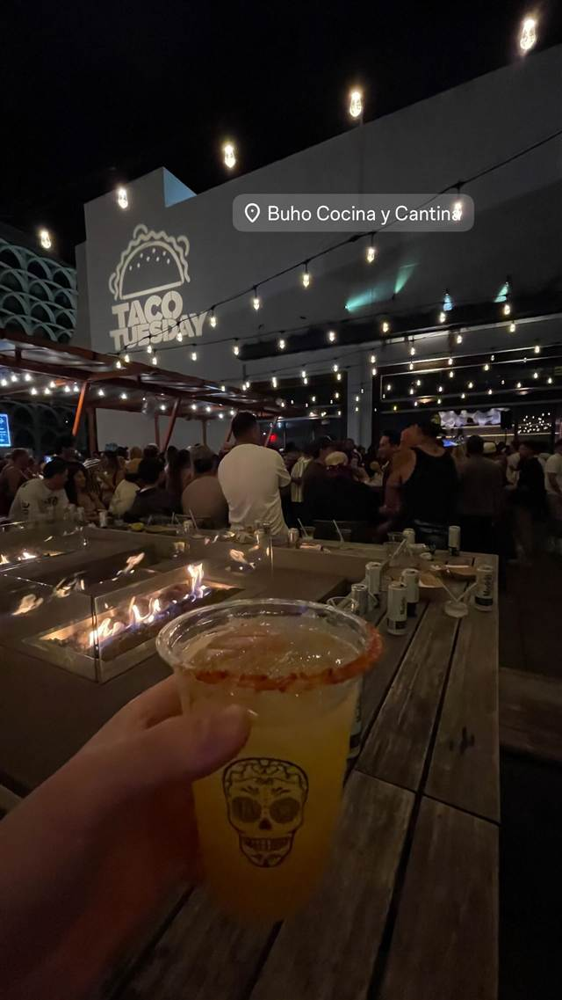
メキシコ ワイキキ Buho Cocina Y Cantina スペイン語でフクロウを意味する屋上350席のタコスとマルガリータ 夜 ¥5,000～¥5,999
ハワイ
-
 ハワイ 牧志駅
ハワイアンフルーツカフェ -the Sea-
久米島の海洋深層水を極薄の氷に削り海を食べるかき氷に仕立てる
昼 ¥1,000～¥1,999 夜 ¥1,000～¥1,999
ハワイ 牧志駅
ハワイアンフルーツカフェ -the Sea-
久米島の海洋深層水を極薄の氷に削り海を食べるかき氷に仕立てる
昼 ¥1,000～¥1,999 夜 ¥1,000～¥1,999
-
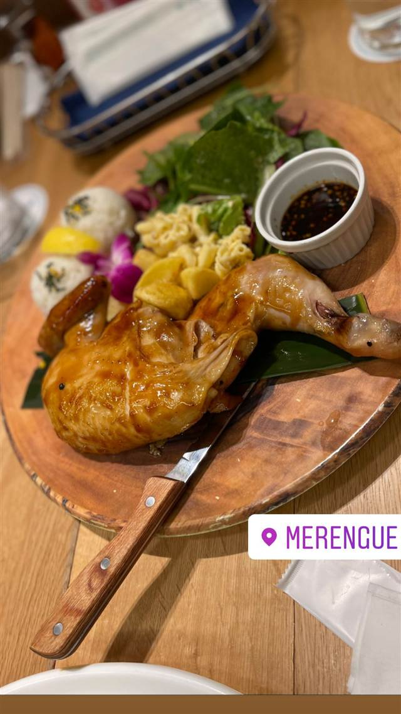
ハワイ たまプラーザ メレンゲ たまプラーザ店（Merengue） メレンゲ使用のふわふわパンケーキとロコモコが名物のハワイアン 昼 ¥1,000～¥1,999 夜 ¥1,000～¥1,999 -
 ハワイ 六本木駅
POKEDO MARKET（ポケドゥマーケット）
具材を自由に選べる本場ハワイ仕込みのカスタムポケ丼
昼 ¥2,000～¥2,999 夜 ¥3,000～¥3,999
ハワイ 六本木駅
POKEDO MARKET（ポケドゥマーケット）
具材を自由に選べる本場ハワイ仕込みのカスタムポケ丼
昼 ¥2,000～¥2,999 夜 ¥3,000～¥3,999
-
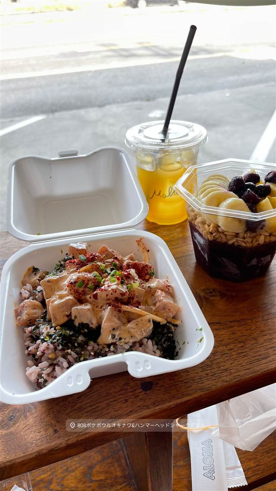
ハワイ 美浜 808 Poke Bowls Okinawa 北谷店 & Hammerhead Shark Grill 808 ハワイの市外局番にちなむ名の生姜蜂蜜味噌ダレのポケ丼 昼 ¥1,000～¥1,999 夜 ¥1,000～¥1,999 -
ハワイ Kahuku
Giovanni's Original Shrimp Truck (Kahuku店)
カフクスタイルのガーリックシュリンプを広めた元祖の屋台
-
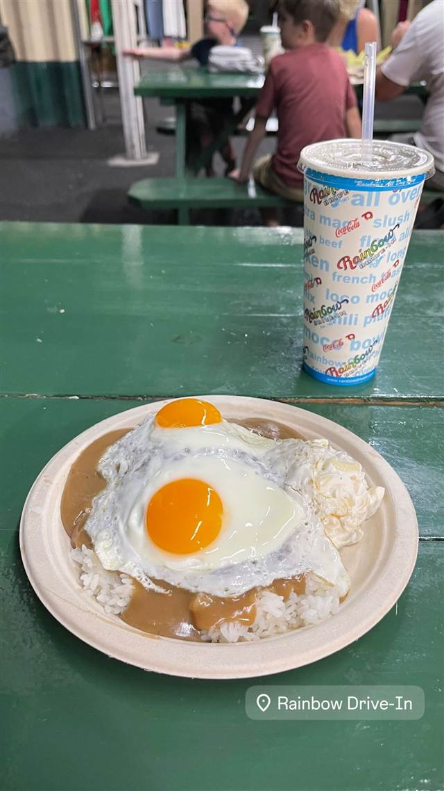
ハワイ カパフル Rainbow Drive-In (Kapahulu) ヒロの老舗「Cafe 100」直伝レシピのロコモコ -
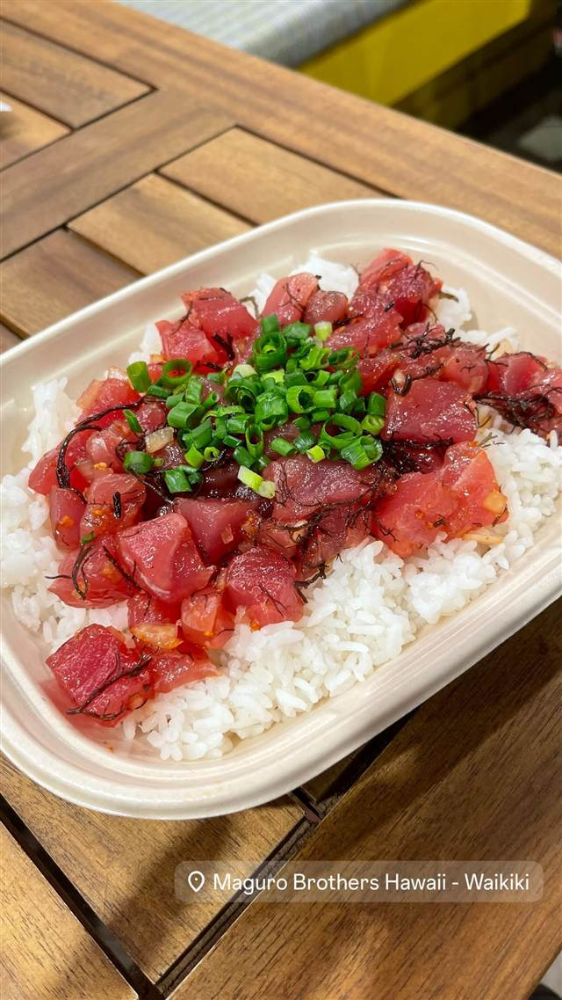
ハワイ ワイキキ Maguro Brothers Hawaii（ワイキキ店） 築地で目利きを鍛えた兄弟が営むチャイナタウン発のポキ丼
ベトナム
-
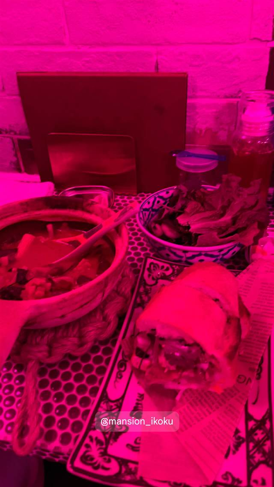
ベトナム mansion_ikoku 夜 ¥10,000～¥14,999 -
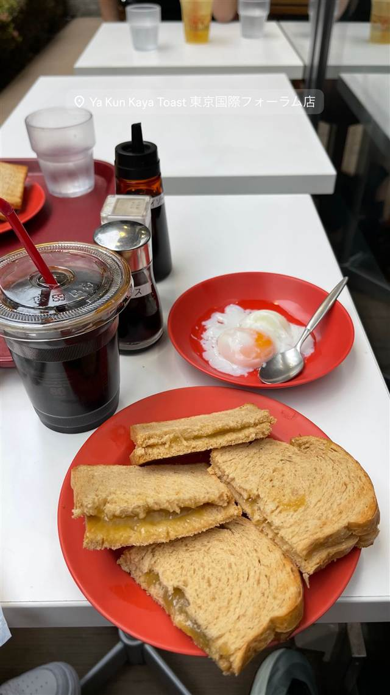
ベトナム 有楽町 Ya Kun Kaya Toast 東京国際フォーラム店 1944年シンガポール創業の自家製カヤジャムトースト 昼 ～¥999 夜 ～¥999 -
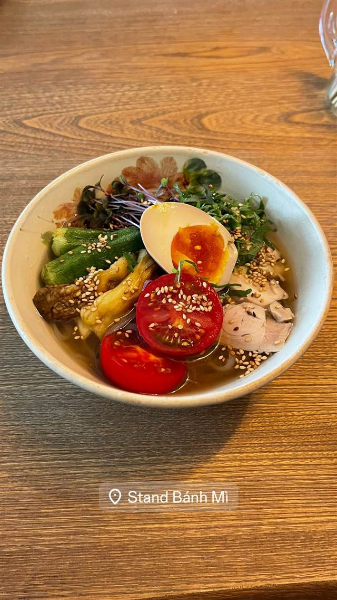
ベトナム 学芸大学駅 Stand Bánh Mì（スタンドバインミー） フレンチでワインを担当していた店主が営む10時間出汁のフォー 夜 ¥4,000～¥4,999 -
 ベトナム 渋谷駅
ミス・サイゴン（MISS SAIGON）
ベトナム人スタッフが作る野菜たっぷりのフォーとバインセオ
夜 ～¥5,999
ベトナム 渋谷駅
ミス・サイゴン（MISS SAIGON）
ベトナム人スタッフが作る野菜たっぷりのフォーとバインセオ
夜 ～¥5,999
-
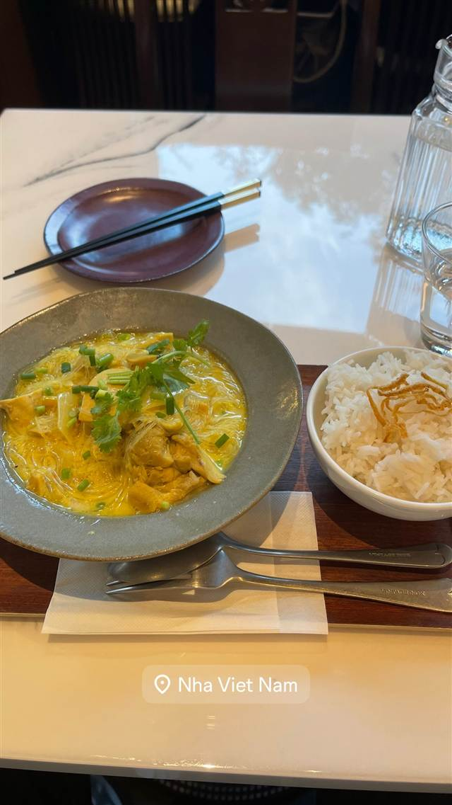
ベトナム 恵比寿 ニャーヴェトナム 本店 (Nha Viet Nam) ベトナム大使館の要請で2002年に開業したベトナムカレー麺 昼 ¥1,000～¥1,999 夜 ¥3,000～¥3,999
韓国
-
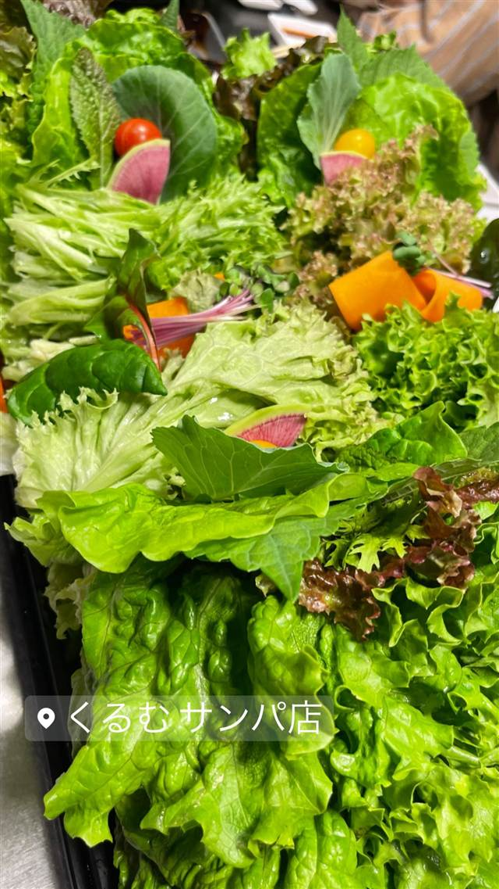
韓国 新大久保 くるむ サンパ店 15種の野菜で牛肉を包んで食べるサムギョプサル 夜 ¥3,000～¥3,999 -
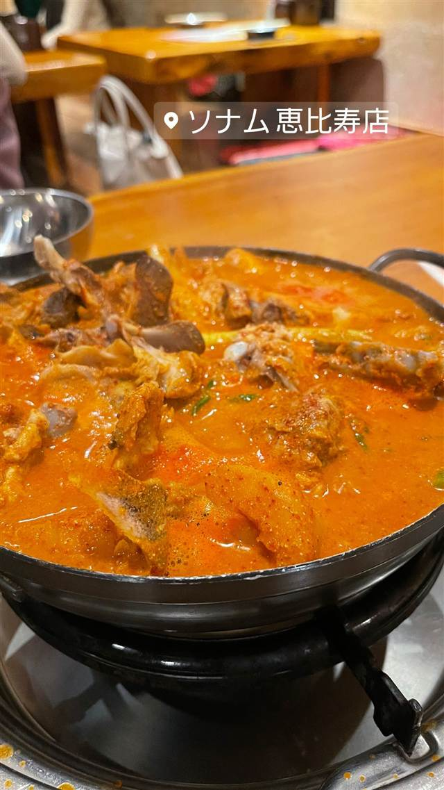
韓国 恵比寿駅 ソナム 恵比寿店 独自仕入れの食材で作るキムチと看板カムジャタン 昼 ¥1,000～¥1,999 夜 ¥5,000～¥5,999 -
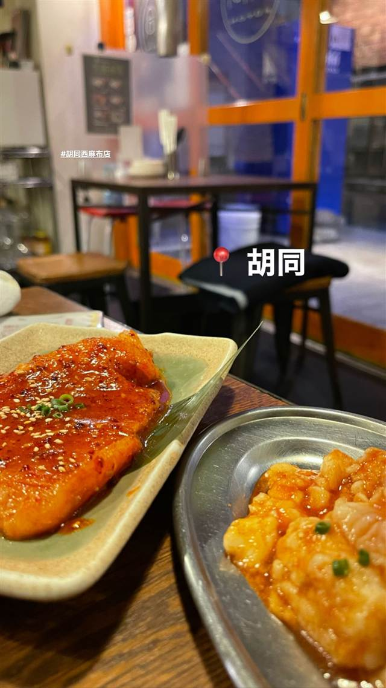
韓国 広尾 胡同 西麻布店（フートン） 西麻布の裏路地で30年、名物はねぎタン塩とカムジャタン鍋 夜 ¥4,000～¥4,999 -
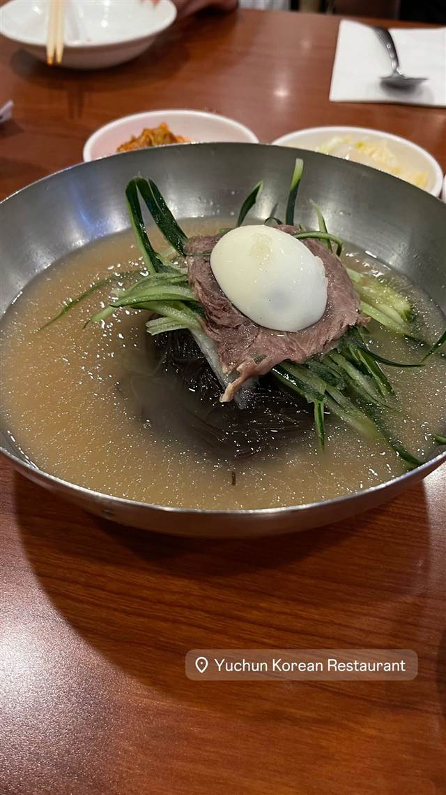
韓国 ホノルル Yu Chun Korean Restaurant 韓国産の葛粉を使う麺と24時間かけるスープは同名の他店と別物
タイ


台湾


インド
ドイツ
その他
- エスニック・各国料理 麻布十番 ブルガズ アダ（BURGAZ ADA） 日本で数少ないオスマン宮廷料理専門店で、香辛料をトルコから直接買い付ける 昼 ¥15,000～¥19,999 夜 ¥15,000～¥19,999
-
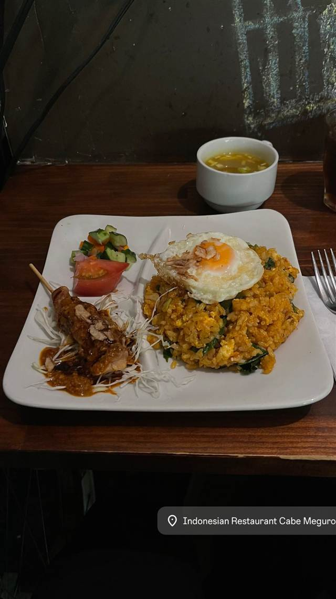
エスニック・各国料理 目黒駅（東口） Cabe Meguro（チャベ目黒店） インドネシア語で唐辛子を意味する全メニューハラール対応のナシゴレン 昼 ¥1,000～¥1,999 夜 ¥3,000～¥3,999 - 写真なし エスニック・各国料理 麻布十番 Lau-Lau(ラウラウ) 麻布十番店 タイ・ベトナムなど東南アジア料理を日本人向けの優しい味付けで 昼 ¥1,000～¥1,999 夜 ¥2,000～¥2,999
-
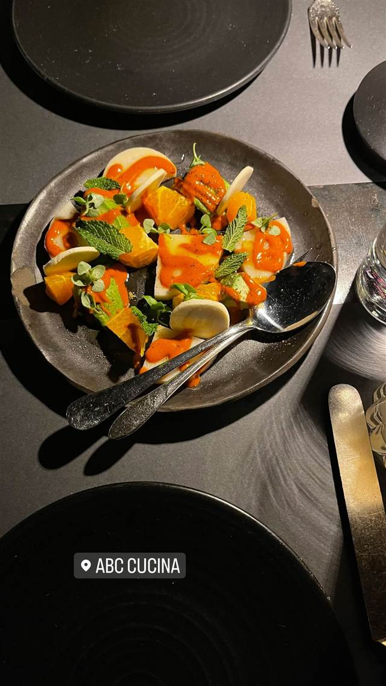
エスニック・各国料理 23rd St ABC Cocina 人気店ABC Kitchenの姉妹店、薪火グリルで焼く中南米料理